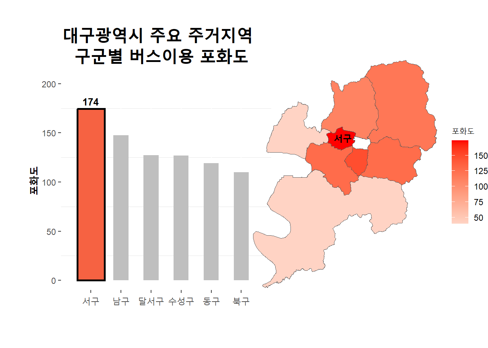
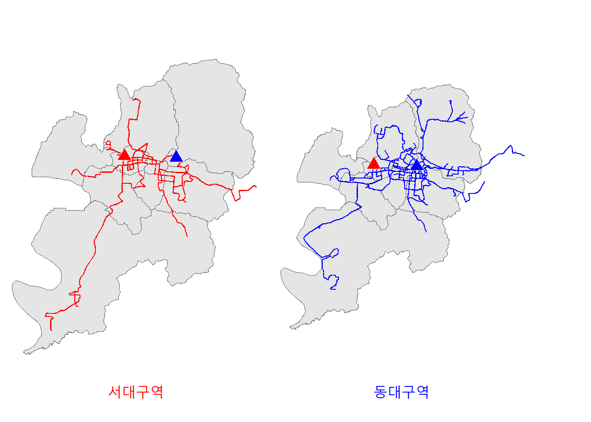
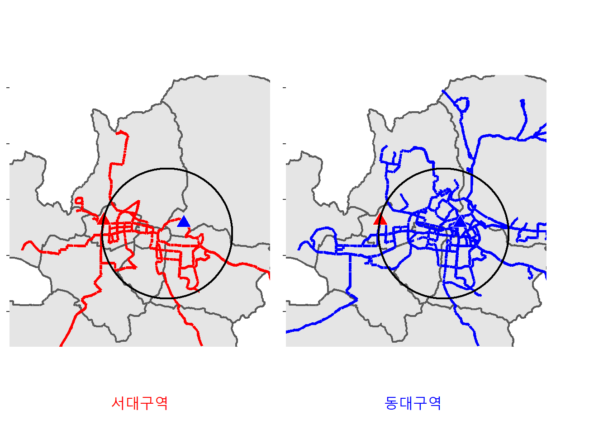

대구 대중교통 빈부격차… 서구는 왜 외면당하나
대구 미래 교통 허브가 될 서구 지역
버스정류소, 버스노선 절대적으로 부족해…
대구지하철 5호선, 서구 반드시 통과해야…
최근 대구 서구 지역이 대구의 교통 요충지로 부상하며 그 중요성이 대두되고 있다. 행정안전부의 ’주민등록 인구통계’에 따르면 현재 서구 인구는 약 16만 4천 명으로 전년보다 약 4천 명이 늘었고 증가분의 절반이 30대로 젊은 세대 위주의 거주민이 증가하는 추세다.
이러한 현상의 중심에는 서대구역이 있다. 서대구역은 개통 2년 만에 이용객 290만 명을 돌파하며 대구 교통의 중심이었던 동대구역을 대신해 대구 서남부권 교통 중심지로 성장하고 있다. 올해 말 개통 예정인 대구권 광역철도, 대구산업선(27년), 신공항철도(30년), 달빛내륙고속철도(30년)까지 4개 철도노선이 추가 개통됨에 따라 서대구역 이용객 수는 꾸준히 증가할 것으로 기대된다.
하지만, 이렇게 대구 내에서 서구 지역의 중요성이 증가함에도 불구하고 여전히 서구 지역 대중교통에 대한 잡음은 끊이지 않고 있다. 특히, 새로 개통하는 대구 4호선에 당초 계획된 서구 인구 밀집 지역인 평리동, 내당동, 비산동을 관통하는 지하철역이 제외되고 모든 지하철 노선이 서구를 비껴가면서 서구 주민들은 서구가 지역을 관통하는 도시철도가 하나도 없는 교통오지로 전락하고 있다며 불만을 토했다.
서대구역 접근성 개선을 요구하는 목소리 또한 높다. 실제 일부 주민은 거리상 서대구역이 가까움에도 교통편 부족으로 동대구역을 더 자주 방문한다고 말한다.
“서대구역을 가려면 버스로 가는 방법밖에 없어서 자차로 가지 않는 이상 너무 불편해요. 서대구역 가는 버스가 별로 없는 데다가 배차간격이 커서 그냥 지하철 타고 동대구역으로 가는 게 더 편해요.” - 달서구 주민 장 모 씨(여. 24세)
이처럼 서구 주민들은 지하철 부재로 인한 불편함과 서대구역 접근성에 대한 문제를 토로하고 있다. 서구 지역 버스 이용 현황과 서대구역 접근성 분석을 통해 실제 주민들이 겪고 있는 불편함에 대한 실태를 알아보았다.
서구 지역 버스이용은 얼마나 포화되어 있는가
지역의 버스 이용이 원활한지를 알아보기 위해 버스 정류소와 버스 노선이 충분히 편재되어 있는지 살펴볼 필요가 있다.
그렇다면, 서구에 버스 정류소는 충분할까? 서구 지역의 버스 정류소는 지역민들의 수요에 적절히 대응하고 있는지 알아보았다. 다음 그래프를 살펴보자.
2024년 4월 기준, 전체 정류소의 평균 승객수를 파악하여 구별 버스 이용이 현재 얼마나 포화 상태인가를 알아보았다. 위 자료는 달성군 및 군위군, 그리고 주요 번화가가 밀집해 있는 중구 지역을 제외한 대구시의 주요 주거지역이 형성되어 있는 지역구들의 버스 이용 포화도를 비교한 자료이다.
서구는 대구시 전체 이용객 수의 9.2%인 206만 8,782명으로 남구 다음으로 가장 적은 이용객 수 지표를 보이고 있지만 가장 포화도가 높은 것으로 나타났다. 이는 서구 지역에 편재된 버스를 이용할 때 이용객들의 불편함 수준이 타 지역구에 비해 더 높을 가능성이 있음을 의미한다.
서구 전체의 대중교통 수요를 버스 혼자 감당하고 있다는 점이 그 원인으로 꼽힌다. 그마저도 이용객 수 대비 정류소 개수가 적어 버스 이용 포화도는 타 지역구에 비해 높은 실정이다. 이를 통해 서구 지역의 지하철 수요가 적을 것이라는 예상 또한 타당하지 않으며, 오히려 타구군 대비 높은 포화도를 이유로 우선적으로 지하철 신설의 혜택을 누려야 하는 지역임을 알 수 있다.
그러나 서구 지역은 이번 대구 4호선 계획에서 철저히 배제되었으며 빨라야 5호선이 개통하는 2033년이 되어야 그 수혜를 입을 수 있다. 더군다나, 서구 지역을 관통하는 지하철 노선이 단 하나도 존재하지 않는 상황 속에서, 유일한 대중교통 수단인 버스 이용에 대한 불편함은 지역민들과 서구 지역 방문객들에게 더욱 크게 다가올 수밖에 없다.
서구지역, 버스 노선도 부족하다
서대구역과 동대구역의 비교 : 전체적인 접근성
부족한 정류소 수뿐만 아니라 노선의 수 또한 서구 지역 주민들이 겪는 불편과 소외감의 큰 원인이 되고 있다. 이러한 문제점은 서구 지역의 교통 허브인 서대구역과 비슷한 목적을 가진 동대구역을 비교하였을 때 현저히 드러난다. 다음 지도를 살펴보자

서대구역과 동대구역의 버스 노선지도. 노선 수와 범위에서 눈에 띄게 차이가 난다.
서대구역을 지나는 노선은 총 8개이지만 동대구역을 지나는 노선은 20여 개에 이르며 이를 지도상에 표시하면 위와 같다. 서대구역이 범 경상권을 아우르는 교통 허브의 역할을 하기에는 다소 초라한 모습이다. 이는 대구 지역에서 고속철도를 이용하기 위한 접근성에서 서대구역의 경쟁력이 현저히 떨어진다는 의미이다.
8개의 노선밖에 운행이 되지 않아 노선이 지나지 않는 많은 지역에서는 버스, 혹은 도시철도로 환승해서 서대구역으로 가야 한다. 하지만 대부분의 시민은 그런 수고를 들이지 않고 차라리 동대구역을 이용하고 있는 것이 현실이다.
다른 지역에서 대구로 오는 경우에도 상황은 비슷하다. 서대구역에서 하차할 시 지하철이 부재하고 편재된 버스 노선이 적기 때문에 가고자 하는 목적지까지 환승이나 다른 교통수단을 추가로 이용해야 할 가능성이 크다. 대구 시민의 경우와 마찬가지 이유로 역시 동대구역을 더 선호하게 될 것이다.
서구 지역의 교통 중추인 서대구역에 편재된 버스가 적기에 서구 지역의 포화한 교통수요를 충족해 줄 수 없다. 지도에서 보이는 것처럼 절대적인 노선 수가 부족하기 때문에 서구에서 다른 지역으로 가기 위해서는 많은 경우 환승이나 다른 수단이 필요하다. 동대구역과의 비교는 차치하고서라도, 이런 문제는 서구 지역 주민들의 교통 불편과 나아가 소외경험까지 초래할 수 있다.
이러한 문제는 도심지로의 이동에서도 발생하고 있다. 다음 지도를 살펴보자.
서대구역과 동대구역의 비교 : 도심으로의 접근성

도심지역을 확대한 지도. 도심지역에 편재된 노선에서도 큰 차이가 난다.
위 지도는 노선도를 확대한 것이며 검은 원은 대구의 도심지를 나타낸 것이다. 서구와 서대구역은 대구 전 지역으로의 접근성도 부족하지만, 지도에서 보이는 것처럼 대구 도심으로의 접근성 또한 부족하다. 한눈에 보더라도 동대구역에서 출발하는 노선들이 훨씬 촘촘하게 도심지를 지나는 것을 볼 수 있다.
이는 결과적으로 서구 지역 주민들은 다른 먼 지역이 아니라 비교적 가까운 도심지역으로 갈 때에도 다른 지역보다 현저히 적은 버스 노선으로 인해 환승이나 다른 교통수단을 이용해야 한다는 것을 의미한다. 이는 앞서 살펴본 것처럼 서구주민의 불편과 소외 감정을 불러일으킬 수 있다.
서구 지역 교통 소외, 대책은 없나?
이처럼 서구 지역은 중심을 통과하는 지하철이 부재해 대중교통 이용 시 버스로 이용객이 몰리지만, 버스 정류소와 버스 노선은 현저히 부족한 실정이다. 따라서, 이러한 문제를 해결하기 위해 단기적으로는 대중교통 접근성이 떨어지는 곳을 조사해 버스 정류소 수를 늘리고 버스 노선을 다양화할 필요가 있다.
무엇보다, 서대구역과 서대구역 인근으로의 접근성 개선이 시급하다. 서대구역과의 인접성을 바탕으로 대구 서부권 대표 주거지로 떠오르고 있는 ’평리뉴타운’이 대표적이다. 평리뉴타운 내부로 들어오는 버스 노선은 현재 204번 하나뿐이고 배차간격 또한 20분 안팎이라 주민들이 불편함을 호소하고 있다. 그러므로 평리뉴타운과 서대구역 및 서대구로를 연결하는 대중교통망을 추가로 확보해야 한다.
서구 주민들은 당초 지하철 4호선 계획안이 서구 지역을 포함하지 않는 노선으로 변경되어 5호선도 변경되지 않을까 하는 우려의 목소리를 내고 있다. 그러므로 지하철 5호선은 현안과 같이 서구 지역을 통과해야만 한다. 서구 지역을 잇는 도시철도의 신설은 주민들의 불편을 해소하고 서대구역을 더욱 활성화해 서구 지역 교통 소외 문제를 점차 해결하고 지역 발전을 크게 도약시킬 것이다.